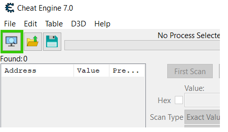
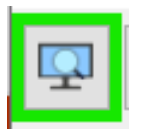
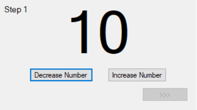
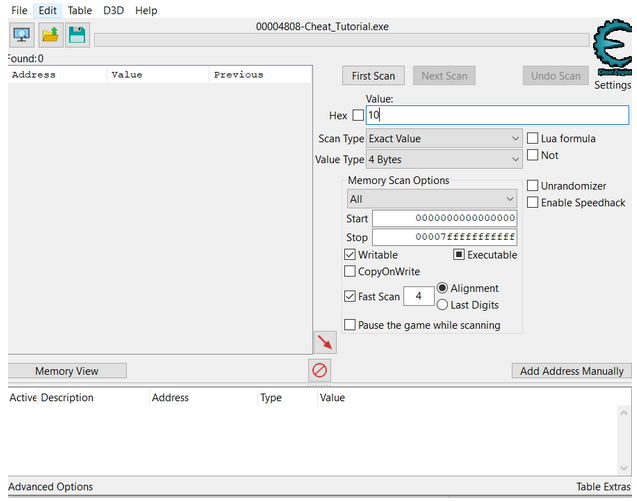
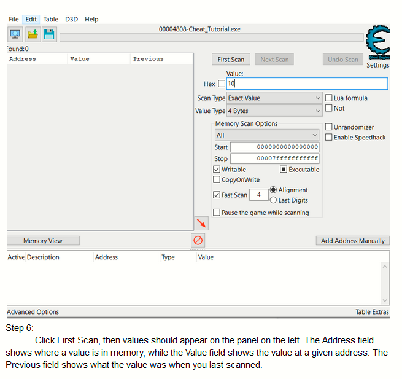
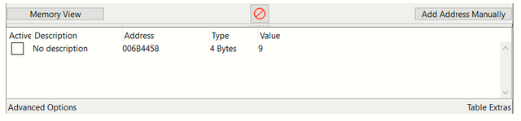
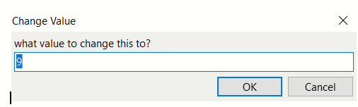
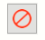
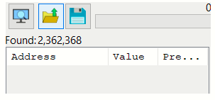
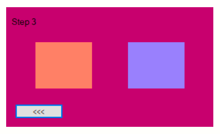

Installing Cheat Engine 6.8.3 on Windows 10
Step 1
Navigate to the cheat engine website and select the download page: https://cheatengine.org/. Click on the Downloads link of the left-navigation bar and scroll down the page to where it lists older versions of CheatEngine. Click any link to navigate to the GitHub source

Alternatively, you can go directly to the GitHub page. https://github.com/cheat-engine/cheat-engine/releases/tag/6.8.3. Newer versions are available but for the purpose of this tutorial version 6.8.3 has been selected.
Step 2
Version 6.8.3 is stored on GitHub. Scroll to the bottom of the page and select the cheatengine.exe to download your file.

Step 3
After you have selected a download location for your file, navigate to the file and execute it. At this point you should see Cheat Engine’s setup application.

Step 4
Read through the License Agreement and “accept” the terms of the agreement. Then, press Next.
Step 5
You will be asked to select the installation directory for Cheat Engine. This can be any directory of your choosing. Click “next” when done.

Step 6
At this point you will be asked what to list Cheat Engine under in the start menu. Write your desired folder name or continue using the default provided. Press “Next” to continue.

Step 7
On the Additional Tasks screen, select if you would like a desktop icon to be created. You can also select to have cheat engine automatically update when the program is launched. Press “Next” to continue.
Step 8
At this step you may get 1 or more product offers with the option to download software such as Yahoo search engine, Avast antivirus and McAfee. Read carefully and then decide whether or not you want to download the additional software. Then click “Next”. You may need to repeat this step for each additional product offered to you.

Step 9
On this screen you must review your information and make sure that it is correct before you press the Install button to complete the installation. If the information is inaccurate you can press the “Back” button to make changes. After pressing install, Cheat Engine goes through the process of installing the software, this may take a few minutes.
Step 10
Review the recent updates to Cheat Engine and press “Next”.
Step 11
On the final screen of the installation you are able to reset Cheat Engine’s settings (useful if you previously installed cheat engine and old settings were not deleted). You may also choose to launch Launch Cheat Engine once you’ve clicked “Finish” is pressed. Press finish to finish the setup.

Uninstalling Cheat Engine 6.8.3 on Windows 10
Step 1
Open the Start Menu by clicking in the lower left of your screen on the Windows icon or by pressing the Windows Key on your keyboard.

Step 2
Type “remove programs” and select “Add or Remove Programs”.

Step 3
Scroll through the list of available programs and find Cheat Engine. Select it, then press Uninstall.

Step 4
You will be asked to confirm the removal of all components of Cheat Engine. Agree with the dialog box.

Step 5
Now you will receive confirmation that Cheat Engine has been removed. Thanks for using Cheat Engine!

Integer Finder
Step 1
Open the file Cheat_Tutorial.exe from the tutorial folder
Step 2
Open the process menu by clicking on the button with a monitor and magnifying glass on it (The border will be glowing if no process is currently selected):
 Step 3
Double click Cheat Engine Tutorial from the process menu
Step 4
In the tutorial program you will see the number 10 with a button to decrease the number and another to increase the number. There is also a greyed out button that leads to the next part of the tutorial. Click the increase and decrease buttons to see how they work.
Step 5
The objective of this part of the tutorial is to get the value to 100. The tutorial program only allows the user to increase the number to a maximum of 99, so the solution is to cheat. In cheat engine select the value box and type in the value of the number from the program. Be sure the settings are similar to the ones in the picture below ensuring the Scan Type is set to Exact Value and the Value Type is set to 4 Bytes (these should be default). Exact value means cheat engine will look for a values in the program that's the same as the one you typed in. 4 Bytes represents the data the value takes up in memory and is used for integers.
Step 6
Click First Scan, then values should appear on the panel on the left. The Address field shows where a value is in memory, while the Value field shows the value at a given address. The Previous field shows what the value was when you last scanned.
Step 7
Now in the Tutorial program click to increase or decrease the value. Insert the new value into the value box and click Next Scan. Next Scan scans through the previous scans results. The number of addresses found in the left panel may have lowered as shown by the number next to “Found”. If you’re not sure which row in the panel represents the number in the tutorial program, repeat this step to lower the number of addresses even more.
Step 8
Once you think you’ve found the address (possibly because there is only 1 address left) double click the row in the panel and the row will be added to the table on the bottom of cheat engine. Double click the number in the Value column of the row on the table and a dialog box will appear to allow you to change the value.
 Step 9
Change the value to 100 and click OK and the “>>>” button in the cheat engine tutorial program should no longer be greyed out allowing you to continue to the next part of the tutorial.
Note: If you have made a mistake along the way via typing a value not in the tutorial program into cheat engine and clicking Next Scan you can try using Undo scan to go back 1 scan. If you’ve taken more than 1 action and can’t Undo the mistake you may need to reset by clicking “New Scan”.
Finding Unknowns
Step 1
Click “New Scan”, then click the button with the red circle with a line through it to delete the addresses you added to the list and click “Yes” on the confirmation popup.
Step 2
This challenge should seem similar to the last, but with a red X instead of a number and a new button “<<<” which allows you to go to the previous challenge. In this tutorial you do not know what value is represented, nor do you know how much the Increase and Decrease Number buttons change the value.

Step 3
In cheat engine select the combo box next to Scan Type and select Unknown Initial Value from the drop down menu, then click Next Scan. No addresses will be shown on the left, but next to “Found” there is a very high number. Unknown Initial scan allows the user to start looking for values that are unknown/ not displayed.
Step 4
In the tutorial program click Increase Number to increase the value of the hidden number. Then in cheat engine change the Scan Type to Value Increased, then click Next Scan. This will check for values that have increased since the last scan.
Step 5
Click the Decrease Number button in the tutorial program. In cheat engine change the Scan Type to Value Decreased and click Next Scan to check for values that have decreased since the last scan.
Step 6
At this point the values in the list should have lowered significantly (you may already know the correct value). Do not click the Increase or Decrease Number buttons and in cheat engine change the Scan Type to Unchanged Value, then click Next Scan. This will check for values that have not changed since the last scan.
Step 7
If you are still having trouble finding the correct value play around with Steps 4-6 until you find the correct address. Once the number of addresses gets low you may be able to figure out the correct address based on how the values change.
Step 8
Add the address to the table on the bottom of cheat engine then change the value to 100 to go to the next part of the tutorial.
Value Types
Step 1
Click “New Scan” and delete the addresses you added to the table.
Step 2
In this challenge you will see a red and blue square and the background is purple. Putting your mouse over the red square slowly changes the background to red and if your mouse is over the blue square the background will start changing to blue. Hold it over a square for a few seconds to see how it works. The red square increases the value of a hidden float while the blue decreases it. This float is what affects the background color and changing the background color is your objective for this challenge.
Step 3
Change the Value Type to Float. Float and Double value types can be used for decimal numbers. Some values may be a float and others may be a double. In some cases you may need to test both to find the value you’re looking for, but in this case it is a float.
Step 4
Change the scan type to Unknown initial value then click First Scan.
Step 5
Use your skills learned from the previous part of the tutorial to check for when the value is increased, decreased or unchanged to limit the addresses found.
Step 6
You may have trouble getting the number of addresses below 100. At this point you will have to deduce the value logically. Here are some tips on how to accomplish that:
- You’ll notice a lot of values in the list are the same, if it was only a few 1 could be the value you’re looking for, but since there are well over 50 of these values changing together, they can all be ruled out.
- At this point it would be good to check the lowest the float can be. Hold your mouse over the blue square in the tutorial program until the background is completely blue and see how the different values react to this.
- The value you are looking for will change at a consistent rate when you hold your mouse over the list.
Step 7
Once you’re able to change the background you have officially completed the tutorial. Congrats!